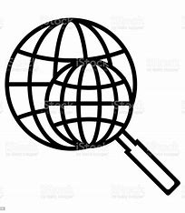
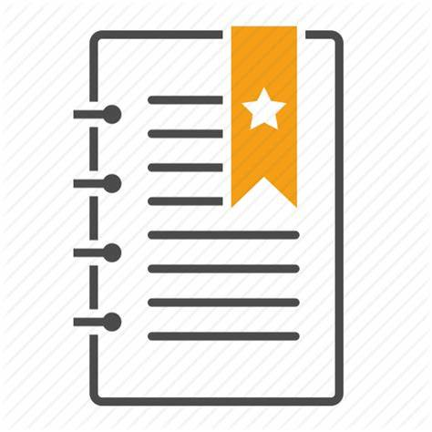

Guilherme barbosa da silva sou estudante de Engenharia de Software na  Estácio e estou aprendendo sobre Lógica da Programação e Dev FULL-STACK na
Estácio e estou aprendendo sobre Lógica da Programação e Dev FULL-STACK na  FAISP Faculdade Interativa de São Paulo,
FAISP Faculdade Interativa de São Paulo,
O Desenvolvimento FULL-STACK engloba tanto o desenvolvimento da interface o - Front-end como o Banco de Dados o Back-end sendo uma área mais Generalista
Também Curso Educação fisíca Bacharelado na FAM
Acesse Meu
Meu Hobby

SOBRE
- FLSTUDIO
- É uma DAW (estação de trabalho de áudio digital) desenvolvida pela Image-Line.
- ORIGEM
- Lançado em 1997, inicialmente como "Fruity Loops", evoluiu ao longo dos anos, ganhando novos recursos e popularidade.
- TÓPICOS
- Interface intuitiva:
- fácil de usar, com arranjo visual.
- Sequenciador de padrões:
- criação rápida de sequências.
- Instrumentos virtuais e plugins:
- vasta biblioteca de sons.
- Suporte a MIDI
- gravação e edição de performances MIDI.
- Automação:
- controle detalhado de parâmetros.
- Multi-gêneros
- versatilidade em estilos musicais.
Acesse minhas criações de Projetos na minha 2ªPágina
Meu Cronograma
Cronograma
Cronograma
| Cronograma |
| NEW |
| Horarios |
| NEW |
| 05:00 AM |
06:00 AM |
07:00 AM |
08:00 AM |
09:00 AM |
10:00 AM |
11:00 AM |
12:00 AM |
13:00 PM |
14:00 PM |
15:00 PM |
16:00 PM |
17:00 PM |
18:00 PM |
19:00 PM |
20:00 PM |
21:00 PM |
22:00 PM |
23:00 PM |
00:00 PM |
| NEW |
| Atividades |
| NEW |
| Iniciar |
Acordar |
Despertar |
Levantar |
Arrumar a cama |
Preparar o café |
Ir a academia |
Treinar |
Voltar |
Almoçar |
Estudar |
Ouvir |
Praticar |
Meditar |
Trabalho |
Intervalo |
Voltar |
Tomar banho |
Estudar |
Praticar |
| NEW |
| Status |
| NEW |
| Lets,go |
Lets,place |
Very good |
Very nice |
Bom |
Otimo |
Excelente |
Mais ou menos |
Até melhor |
Maravilha |
Explendido |
Excepcional |
Legal |
Excelente |
Sensacional |
Maravilhoso |
Muito bom |
Satisfatório |
Paz |
Daora |
| NEW |
| NOTA |
| NEW |
| 9 |
10 |
6 |
7 |
8 |
9 |
10 |
10 |
6 |
7 |
9 |
7 |
8 |
8 |
10 |
9 |
10 |
8 |
10 |
10 |
| NEW |
| FIM |
Centro Universitário Fam
SOBRE
 Missão
Missão- Formar pessoas para transformar a sociedade.
 Valores
Valores- Somos orientados pela responsabilidade da formação integral dos alunos com compromisso social para a construção de uma sociedade justa e solidária.
 Visão
Visão- Ser reconhecida como uma instituição de referência no ensino, que privilegia a formação de pessoas éticas, autônomas, críticas, empreendedoras, inovadoras, criativas e socialmente responsáveis.
Estácio de Sá
Estácio
- Missão
- Integramos academia e gestão para oferecer uma educação transformadora ao maior número de pessoas, criando impacto positivo para a sociedade.
- Visão
- EDUCAR PARA TRANSFORMAR
- Valores
- Foco no aluno
- O aluno é nossa razão de ser.
- Gente e Meritocracia
- Valorizamos e reconhecemos o mérito do maior ativo que possuímos: nossa gente.
- Inovação
- Devemos criar e ousar sempre.
- Simplicidade
- Devemos ser simples para sermos ágeis e austeros.
- Resultado
- Perseguimos resultados extraordinários com paixão e método, agindo sempre como “donos”.
- Ética
- Não toleramos desvios de conduta.
- Excelência
- Perseguimos a excelência na prestação de serviços dentro e fora da sala de aula.
- Hospitalidade
- Tratamos as pessoas como gostamos de ser tratados.
Materias Cursadas
Estacio
Cursadas
| Desenvolvimento de Software |
| Projetar criar e estruturar programas orientando a equipe de desenvolvimento |
| Python |
| Linguagem multiparadigma orientada e estruturada á objetos usada para criação de Inteligência Artificial |
| Arquitetura Computacional |
| É a relação e interação entre o software e o hardware |
| Segurança da Informação |
| Proteção de dados contra ataques malwares realizados por hacker |
| Matemática e lógica |
| Processo lógico para fortalecer o raciocínio lógico que é usado nas linguagens de programação |
| Pensamento Computacional |
| Analise da forma de pensar do programador a melhorar o seu desempenho |
| FIM |
Educação fisíca
Cursadas
| Primeiros Socorros |
| Socorrer em casos de acidentes e urgência o indivíduos realizando os passos de primeiros socorros |
| Manifestações Culturais |
| Diferentes etnias e povos com difentes costumes a serem estudados |
| Pedagogia do esporte |
| É a abordagem que estuda e aplica princípios educacionais e metodológicos para o ensino e a prática esportiva, promovendo o desenvolvimento físico, social e emocional dos indivíduos. |
| Recreação e Lazer |
| Criar atividades no tempo livre trazendo bem-estar e conforto |
| Desenvolvimento Motor |
| Processo pelo qual as habilidades motoras de uma pessoa se aprimoram ao longo do tempo, desde a infância até a vida adulta. |
| Coordenação Motora |
| É a capacidade de controlar e integrar movimentos corporais de forma harmoniosa e eficaz |
| FIM |
Faltam Cursar
Estácio
Faltam
| Comportamento Organizacional |
| Formas da equipe se comportar e liderar numa organização |
| Big data em Python |
| Grande quantidade de dados a serem armazenadas em python utilizando suas bibliotecas e ferramentas |
| Modelagem de Processos |
| Técnica que representa e analisa as etapas de um processo, visando identificar melhorias e otimização de fluxos de trabalho. |
| Java Orientado á objetos |
| Paradigma de programação que utiliza "objetos" para representar dados e métodos, facilitando a reutilização e a organização do código. |
| Engenharia de usabilidade |
| Disciplina que se concentra em otimizar a interação entre usuários e sistemas, assegurando que produtos e serviços sejam fáceis, eficientes e agradáveis de usar |
| Banco de Dados |
| Estrutura organizada que armazena dados de forma que possa ser facilmente acessada, gerenciada e atualizada, utilizando sistemas de gerenciamento (DBMS). |
| FIM |
Educação Fisíca
Faltam
| Biomecânica |
| Estuda os movimentos do corpo humano e as forças que atuam sobre ele, aplicando princípios da física para otimizar o desempenho e prevenir lesões. |
| Cinesiologia |
| Analisa os movimentos do corpo humano, focando nas funções musculares e articulares para entender e melhorar a performance física. |
| Treinamento Espotivo |
| Processo sistemático de preparação física e mental de atletas, visando o aprimoramento de habilidades e o alcance de resultados competitivos. |
| Atividade fisíca e envelhecimento |
| Explora os efeitos da atividade física na saúde e qualidade de vida durante o envelhecimento, promovendo a manutenção da funcionalidade e bem-estar. |
| Aprendizagem Motora |
| Investiga os processos de aquisição e aperfeiçoamento de habilidades motoras, considerando fatores cognitivos e ambientais que influenciam a prática. |
| Morfologia |
| Estuda a forma e estrutura do corpo humano, incluindo a relação entre a composição corporal e o desempenho físico |
| FIM |
Linguagens
Linguagens
 Python
Python- Linguagem de programação versátil e de fácil leitura, amplamente utilizada em ciência de dados, web e automação.
 Java
Java- Linguagem orientada a objetos, conhecida por sua portabilidade entre plataformas e robustez, amplamente usada em aplicativos empresariais e Android.
 C
C- Linguagem de programação de baixo nível, fundamental para o desenvolvimento de sistemas e programação de hardware devido à sua eficiência.
 C++
C++- Extensão da linguagem C que inclui programação orientada a objetos, amplamente usada em software de sistemas, jogos e aplicações de desempenho crítico.
 PHP
PHP- Linguagem de script voltada para desenvolvimento web, popular para criar sites dinâmicos e sistemas de gerenciamento de conteúdo.
 Javascript
Javascript- Linguagem de programação essencial para desenvolvimento web, permitindo a criação de interatividade em páginas e aplicações.
 C#
C#- Linguagem orientada a objetos desenvolvida pela Microsoft, amplamente utilizada para desenvolvimento de aplicativos desktop e jogos na plataforma .NET.
 RUBY
RUBY- Linguagem de programação focada na simplicidade e produtividade, famosa pelo framework Ruby on Rails, que facilita o desenvolvimento web.
Meus Certificados